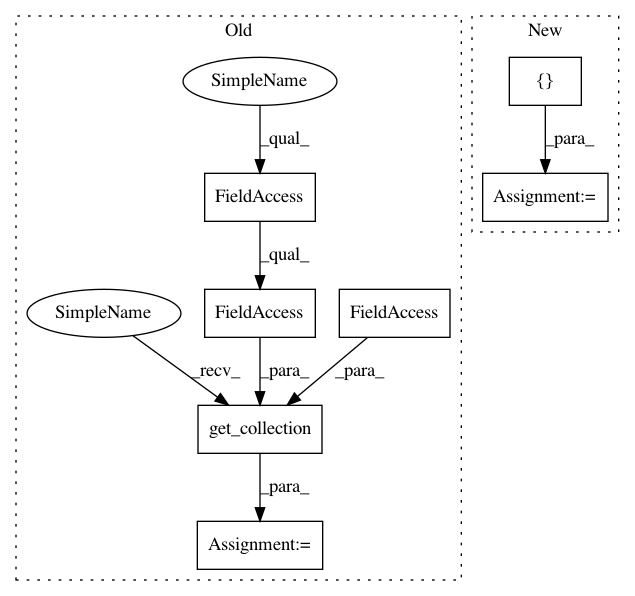

3dec543fe5e96ffd27705ab3e31e288d106903e3,tensorlayer/layers.py,BatchNormLayer,__init__,#BatchNormLayer#Any#Any#Any#Any#Any#Any#Any#Any#,1783
Before Change
self.outputs = act( tf.nn.batch_normalization(self.inputs, mean, variance, beta, gamma, epsilon) )
// variables = tf.get_collection(TF_GRAPHKEYS_VARIABLES, scope=vs.name) // 8 params in TF12 if zero_debias=True
variables = tf.get_collection(tf.GraphKeys.TRAINABLE_VARIABLES, scope=vs.name) // 2 params beta, gamma
// variables = [beta, gamma, moving_mean, moving_variance]
// print(len(variables))
After Change
// variables = tf.get_collection(TF_GRAPHKEYS_VARIABLES, scope=vs.name) // 8 params in TF12 if zero_debias=True
// variables = tf.get_collection(tf.GraphKeys.TRAINABLE_VARIABLES, scope=vs.name) // 2 params beta, gamma
// variables = [beta, gamma, moving_mean, moving_variance]
variables = [beta, gamma]
// print(len(variables))
// for idx, v in enumerate(variables):
// print(" var {:3}: {:15} {}".format(idx, str(v.get_shape()), v))
In pattern: SUPERPATTERN
Frequency: 3
Non-data size: 7
Instances
Project Name: tensorlayer/tensorlayer
Commit Name: 3dec543fe5e96ffd27705ab3e31e288d106903e3
Time: 2017-01-09
Author: dhsig552@163.com
File Name: tensorlayer/layers.py
Class Name: BatchNormLayer
Method Name: __init__
Project Name: zsdonghao/text-to-image
Commit Name: d42df89c351e0c2a031ea3a9ae17fb7b844e7b79
Time: 2017-01-18
Author: dhsig552@163.com
File Name: tensorlayer/layers.py
Class Name: BatchNormLayer
Method Name: __init__
Project Name: tensorlayer/tensorlayer
Commit Name: 3dec543fe5e96ffd27705ab3e31e288d106903e3
Time: 2017-01-09
Author: dhsig552@163.com
File Name: tensorlayer/layers.py
Class Name: BatchNormLayer5
Method Name: __init__